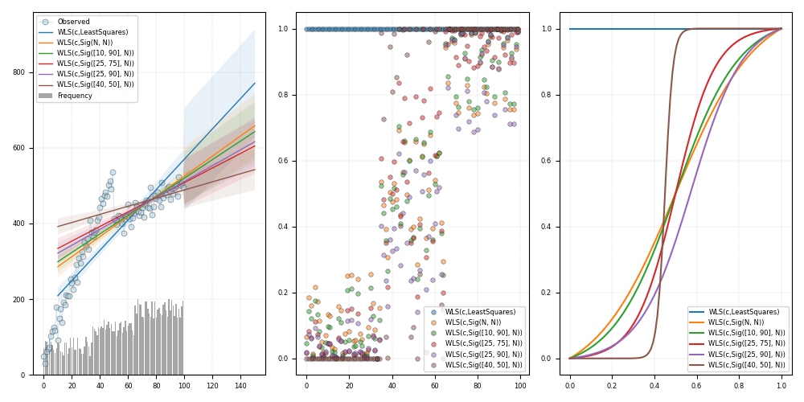

Note
Click here to download the full example code
WLS search¶
Out:
c:\users\kelda\desktop\repositories\virtualenvs\venvpy39-datablend\lib\site-packages\statsmodels\regression\linear_model.py:764: RuntimeWarning:
divide by zero encountered in log
c:\users\kelda\desktop\repositories\virtualenvs\venvpy39-datablend\lib\site-packages\statsmodels\regression\linear_model.py:764: RuntimeWarning:
divide by zero encountered in log
c:\users\kelda\desktop\repositories\virtualenvs\venvpy39-datablend\lib\site-packages\statsmodels\regression\linear_model.py:764: RuntimeWarning:
divide by zero encountered in log
c:\users\kelda\desktop\repositories\virtualenvs\venvpy39-datablend\lib\site-packages\statsmodels\regression\linear_model.py:764: RuntimeWarning:
divide by zero encountered in log
c:\users\kelda\desktop\repositories\virtualenvs\venvpy39-datablend\lib\site-packages\statsmodels\regression\linear_model.py:764: RuntimeWarning:
divide by zero encountered in log
Grid search:
0 1 2 3 4 5
wls-rsquared 0.7292 0.508 0.497 0.4018 0.4291 0.3252
wls-rsquare... 0.7264 0.503 0.4919 0.3957 0.4233 0.3183
wls-fvalue 263.8938 101.1878 96.8264 65.817 73.6683 47.2329
wls-fprob 0.0 0.0 0.0 0.0 0.0 0.0
wls-aic 1130.9889 inf inf inf inf inf
wls-bic 1136.1993 inf inf inf inf inf
wls-llf -563.4945 -inf -inf -inf -inf -inf
wls-mse_model 1236458.6685 127660.74 121454.0566 55442.845 53882.1344 24154.1876
wls-mse_resid 4685.4396 1261.6214 1254.348 842.3782 731.4157 511.3845
wls-mse_total 17127.5934 2538.3801 2468.4865 1393.8981 1268.2916 750.2007
wls-const_coef 175.2455 278.0391 282.2336 322.9499 314.7989 369.3898
wls-const_std 13.588 16.5426 16.5315 15.7029 15.8731 11.749
wls-const_t... 12.8971 16.8075 17.0725 20.5663 19.8322 31.44
wls-const_t... 0.0 0.0 0.0 0.0 0.0 0.0
wls-const_cil 148.2805 245.2109 249.4274 291.788 283.2993 346.0742
wls-const_ciu 202.2105 310.8673 315.0397 354.1118 346.2986 392.7053
wls-x1_coef 3.8521 2.3127 2.2595 1.7246 1.8188 1.1163
wls-x1_std 0.2371 0.2299 0.2296 0.2126 0.2119 0.1624
wls-x1_tvalue 16.2448 10.0592 9.84 8.1128 8.583 6.8726
wls-x1_tprob 0.0 0.0 0.0 0.0 0.0 0.0
wls-x1_cil 3.3816 1.8565 1.8038 1.3027 1.3983 0.794
wls-x1_ciu 4.3227 2.769 2.7151 2.1464 2.2393 1.4386
wls-s_dw Jarque-Ber... Jarque-Ber... Jarque-Ber... Jarque-Ber... Jarque-Ber... Jarque-Ber...
wls-s_jb_value Prob(JB): Prob(JB): Prob(JB): Prob(JB): Prob(JB): Prob(JB):
wls-s_jb_prob Cond. No. Cond. No. Cond. No. Cond. No. Cond. No. Cond. No.
wls-s_skew Kurtosis: Kurtosis: Kurtosis: Kurtosis: Kurtosis: Kurtosis:
wls-s_kurtosis
wls-s_omnib... Prob(Omnib... Prob(Omnib... Prob(Omnib... Prob(Omnib... Prob(Omnib... Prob(Omnib...
wls-s_omnib... Skew: Skew: Skew: Skew: Skew: Skew:
wls-m_dw 0.2518 0.1595 0.1548 0.1145 0.1217 0.0817
wls-m_jb_value 6.3501 7.3045 7.9442 13.5371 12.7191 16.7738
wls-m_jb_prob 0.0418 0.0259 0.0188 0.0011 0.0017 0.0002
wls-m_skew 0.6092 -0.6191 -0.6513 -0.8878 -0.8569 -1.0017
wls-m_kurtosis 3.1986 3.4691 3.458 3.3098 3.3393 3.1102
wls-m_nm_value 6.6796 7.7512 8.3002 12.5203 11.9668 14.4221
wls-m_nm_prob 0.0354 0.0207 0.0158 0.0019 0.0025 0.0007
wls-m_ks_value 0.54 0.62 0.62 0.636 0.61 0.6599
wls-m_ks_prob 0.0 0.0 0.0 0.0 0.0 0.0
wls-m_shp_v... 0.9681 0.926 0.9223 0.8926 0.8972 0.8715
wls-m_shp_prob 0.016 0.0 0.0 0.0 0.0 0.0
wls-m_ad_value 1.0343 3.6154 3.7883 5.0565 4.8714 5.734
wls-m_ad_nnorm False False False False False False
wls-exog [[1.0, 0.0... [[1.0, 0.0... [[1.0, 0.0... [[1.0, 0.0... [[1.0, 0.0... [[1.0, 0.0...
wls-endog [50.790713... [50.790713... [50.790713... [50.790713... [50.790713... [50.790713...
wls-trend c c c c c c
wls-weights [1.0, 1.0,... [0.0117023... [0.0103227... [0.0023656... [0.0029996... [5.3359187...
wls-W <statsmode... <pyamr.met... <pyamr.met... <pyamr.met... <pyamr.met... <pyamr.met...
wls-model <statsmode... <statsmode... <statsmode... <statsmode... <statsmode... <statsmode...
wls-id WLS(c,Leas... WLS(c,Sig(... WLS(c,Sig(... WLS(c,Sig(... WLS(c,Sig(... WLS(c,Sig(...
8 9 10 11 12 13 14 15 16 17 18 19 20 21 22 23 24 25 26 27 28 29 30 31 32 33 34 35 36 37 38 39 40 41 42 43 44 45 46 47 48 49 50 51 52 53 54 55 56 57 58 59 60 61 62 63 64 65 66 67 68 69 70 71 72 73 74 75 76 77 78 79 80 81 82 83 84 85 86 87 88 89 90 91 92 93 94 95 96 97 98 99 100 101 102 103 104 105 106 107 108 109 110 111 112 113 114 115 116 117 118 119 120 121 122 123 124 125 126 127 128 129 130 131 132 133 134 135 136 137 138 139 140 141 | # Import class.
import sys
import numpy as np
import pandas as pd
import matplotlib as mpl
import matplotlib.pyplot as plt
import statsmodels.api as sm
import statsmodels.robust.norms as norms
# import weights.
from pyamr.datasets.load import make_timeseries
from pyamr.core.regression.wls import WLSWrapper
from pyamr.metrics.weights import SigmoidA
# ----------------------------
# set basic configuration
# ----------------------------
# Matplotlib options
mpl.rc('legend', fontsize=6)
mpl.rc('xtick', labelsize=6)
mpl.rc('ytick', labelsize=6)
# Set pandas configuration.
pd.set_option('display.max_colwidth', 14)
pd.set_option('display.width', 150)
pd.set_option('display.precision', 4)
# ----------------------------
# create data
# ----------------------------
# Create timeseries data
x, y, f = make_timeseries()
# -----------------------------
# Example II
# -----------------------------
# This example performs grid search on a number of possible configurations
# of the WLSWrapper. In particular, it tests the effect of different
# objects to compute the weights from the frequencies. It presents both
# the resulting pandas dataframe and also a figure.
# Configuration
# -------------
# This variable contains the weight functions to test. Note that in
# the norms module there are other options such as [norms.HuberT(),
# norms.Hampel(), norms.TrimmedMean(), norms.TukeyBiweight(),
# norms.AndreWave(), norms.RamsayE()]
w_func = [
norms.LeastSquares(),
SigmoidA(r=200, g=0.5, offset=0.0, scale=1.0),
SigmoidA(r=200, g=0.5, offset=0.0, scale=1.0, percentiles=[10, 90]),
SigmoidA(r=200, g=0.5, offset=0.0, scale=1.0, percentiles=[25, 75]),
SigmoidA(r=200, g=0.5, offset=0.0, scale=1.0, percentiles=[25, 90]),
SigmoidA(r=200, g=0.5, offset=0.0, scale=1.0, percentiles=[40, 50])]
# The grid search parameters.
grid_params = [
# {'exog': [x], 'endog': [y], 'trend': ['c']},
{'exog': [x], 'endog': [y], 'trend': ['c'], 'weights': [f], 'W': w_func}
]
# Grid search
# ------------
# Perform grid search.
summary = WLSWrapper(estimator=sm.WLS) \
.grid_search(grid_params=grid_params)
# Show grid results
# ..todo: It is weird to create an WLSWrapper jut to
# be able to use themethod from_list_dataframe.
# try to implemented separately.
print("\nGrid search:")
print(WLSWrapper().from_list_dataframe(summary).T)
# Prediction
# ----------
# Variables.
start, end = 10, 150
# Create figure
fig, axes = plt.subplots(1, 3, figsize=(10, 5))
# Plot truth values.
axes[0].plot(x, y, color='#A6CEE3', alpha=0.5, marker='o',
markeredgecolor='k', markeredgewidth=0.5,
markersize=5, linewidth=0.75, label='Observed')
# Plot frequencies
axes[0].bar(x, f, color='gray', alpha=0.7, label='Frequency')
# For each of the models in summary
for i, model in enumerate(summary):
# Compute predictions.
preds = model.get_prediction(start=start, end=end)
# Plot forecasted values.
axes[0].plot(preds[0, :], preds[1, :],
linewidth=1.0,
label=model._identifier(short=True))
# Plot the confidence intervals.
axes[0].fill_between(preds[0, :],
preds[2, :],
preds[3, :],
alpha=0.1)
# Plot weights assigned to each observation
axes[1].plot(model.weights, marker='o', alpha=0.5,
markeredgecolor='k', markeredgewidth=0.5,
markersize=4, linewidth=0.00,
label=model._identifier(short=True))
# Plot weights converter (W) functions.
if model.W is not None:
axes[2].plot(np.linspace(0, 1, 100),
model.W.weights(np.linspace(0, 1, 100)),
label=model._identifier(short=True))
# Grid.
axes[0].grid(linestyle='--', linewidth=0.35, alpha=0.5)
axes[1].grid(linestyle='--', linewidth=0.35, alpha=0.5)
axes[2].grid(linestyle='--', linewidth=0.35, alpha=0.5)
# Legend.
axes[0].legend(loc=0)
axes[1].legend(loc=0)
axes[2].legend(loc=0)
# Tight layout
plt.tight_layout()
# Show.
plt.show()
|
Total running time of the script: ( 0 minutes 0.478 seconds)